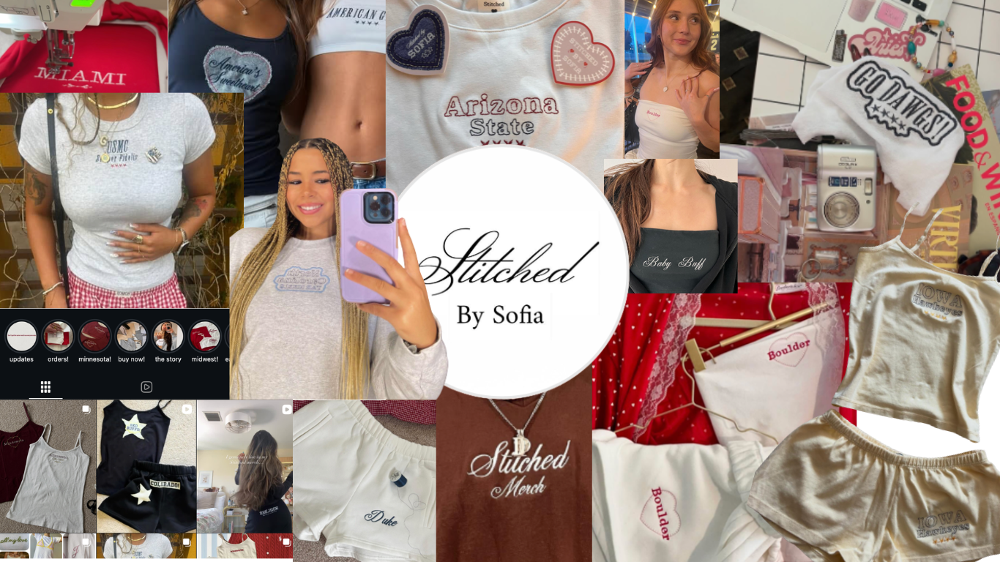

From my junior year in highschool back in 2021, I started Stitched by Sofia as a creative outlet. It quickly became my first experience building a business from scratch. Now, we have shipped over 460 orders to 42 states and 5 countries.
From designing custom embroidery pieces to managing branding, customer communication, product photography, pricing, and fulfillment, I learned what it takes to turn an idea into something people genuinely value.
More than anything, this experience taught me how creativity and business go hand in hand. It challenged me to think like both an artist and an entrepreneur—an approach I still bring to every project I work on today.
